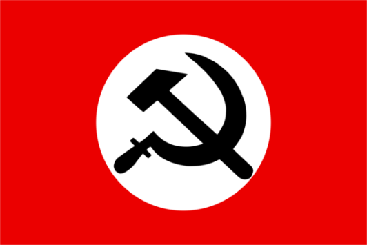

回复
第一个回答还是自己来吧，最近整理旧日记感慨良多。砥砺奋进五年来，在新时代中国特色社会主义大好形势下，繁荣的中文互联网上，充沛着与时俱进的「文艺爱好者」通过用大拇指熟练操作手机发表不超过140字的副和弦负能量且提交动图或短视频的方式主动找我「切磋探讨」，于是我这「仆街写手」对于「文艺理论」的理解也更加深刻了许多。
比如在「2014年7月17日（木）北京〔阴〕」的日记当中，已经提前替兲朝擅长「多边下注左右逢源」「唱双簧」的豪门贵种走兽派家高富帅钦定主角龙傲天设计好了其胯下两拨「膝盖生根头顶绿得发黑贱到骨子里去了」的奴才使用的旗帜：
 炎黄旗
炎黄旗
公开解释是：土黄色代表中国土地，红色代表土地上的人民。因为人类不分种族民族血液都是红的，于是没有什么歧视云云。
私下的解释很简单，就是炎黄子孙的意思。中国是民族国家，是汉族的国家。具体法律上的定义可以参考以色列宪法，犹太人是公民其他人是打工仔那种。
实际上，这个配色是现在国旗和国徽的红黄配色。按照欧洲规矩，纹章传统色旗帜就是横条，上方是纹章背景色，下方是前景色。（奥地利则相反）
已经存在的旗帜当中，上黄下红的有（华沙城旗），左红右金的也有（罗马城旗），而我选的这个式样的还没有，可以不必担心混淆。
选择金色而不是黄色，也有向罗马看齐的意思。罗马的红是庞贝红，那个就不照搬了。
如果台湾回归，那么涉及国旗国徽的讨论一定有，这个算是方案吧。如果觉得很单调，可以在上面再加国徽作为标志。
水深火热旗
这个倒没什么复杂的构思，就是参考普鲁士王国和德意志第二帝国的配色。因为横向三色旗有的是，除了德国之外，中东还有一堆红白黑的旗。而纵向的三色，黑白红是拿破仑时期短暂的罗马共和国用过两年，现在没人用。红白黑三色到现在都没人用，于是定下这个方案。
德国用这个的原因也很简单，条顿骑士团直到普鲁士的纹章和旗帜都是黑白双色，而勃兰登堡与汉萨同盟则是红白双色，那么组合了这两个纹章的第二帝国黑白红三色很自然被接受。
如果非要套用到中国，那么黑白双色可以代表白山黑水，也就是东北。而红白代表长城到秦岭淮河的北方地区么？似乎没什么显而易见的理由，说不通。
而今晚的新闻联播，党国高音喇叭在今日头条位置醒目应景的画面当中，特意提到「这次是首次启用新改革的国事访问欢迎仪式。改革后的欢迎仪式更加庄严、隆重、大气，显现出新时代中国特色大国外交的新面貌、新气象。」
首次启用新改革的国事访问欢迎仪式
注意这批负责「吹号助兴」的公务员，制服配色变了，以前还是红色上装，这次改为接近黑色的深蓝。
而另外一篇报道当中提到了「中央广播电视总台」专访普京大统领：
 珍宝岛！铁列克提！
珍宝岛！铁列克提！
于是又激发了「仆街写手」的灵感，太阳底下没有新鲜事，如果当代政客和狼牙棒对自己出现在文艺作品当中表达不满，那么可以抄袭剽窃至少是借鉴「珍宝岛」和「铁列克提」的剧情，就从人民出版社出版全国新华书店发行的钦定党史国史军史当中「Copy
& Paste」「Find & Replace」即可，这正是钦定文豪野生国师意见领袖指路明灯们所擅长的操作。
那么，「架空」作品当中的兲朝，虽然还得放着「五星红旗迎风飘扬」的助兴曲，但是旗帜就得换成另外一幅：
五星红旗
这还没完，肯定会有娱乐至死の逗哔，临危受命冒充文艺爱好者，以大拇指熟练操作手机的方式，发表不超过140字的主旋律正能量，作忠君爱国状，顺便以「太长不看」理由举报我这仆街写手「不友善」。
所以还得「曰若稽古」，本朝自打起家就「红得发黑」，有图为证：
中国工农红军旗
因此可以「如是我闻」，这次罗刹又有一声炮响，又给兲朝送来了国家布尔什维克主义：

国家布尔什维克党旗
经典就是经典，再怎么烂俗的桥段都能反复上演，就像那查博导话本一般，在浙江大学历史系「磕头认爹拿学位」高材生的率领下，不计血本拼命炒作「师尊」的「文笔」，是为坚持「一日为师终身为父」不动摇的「真の孝子贤孙」者也。